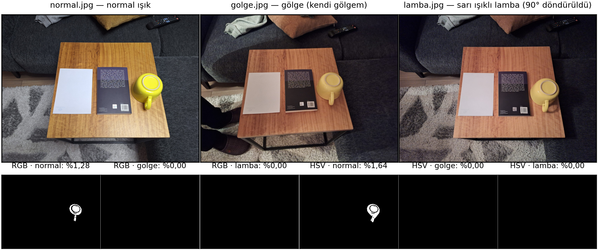
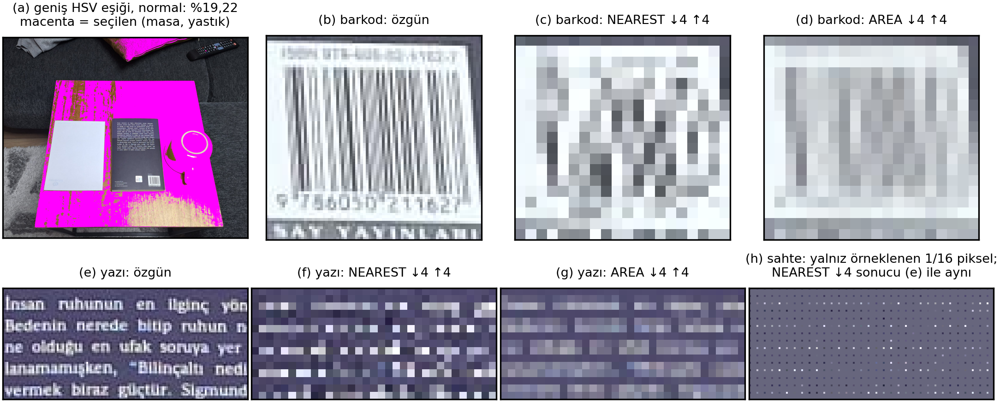

Sahne: ahşap sehpa üzerinde ters duran sarı seramik kupa, beyaz kâğıt ve kitap arka kapağı (küçük puntolu yazı + ISBN barkodu). Üç fotoğraf çektim: normal ışık, gölge (normal ışıkta kendi gövdemin gölgesi) ve sarı ışıklı lamba. Telefon Samsung Galaxy A54, Pro moddaydı; ancak beyaz dengesi Auto'daydı. Fotoğraflar WhatsApp ile aktarıldığı için EXIF silindi (0 etiket) ve görüntüler 2040×1530'a küçültüldü. Bu yüzden farkların yalnızca ışıktan geldiğini iddia etmiyorum. Kamerayı sabitleyemedim; üç çekim farklı açıdan yapıldı. Bunu kısmen telafi etmek için masa düzlemi üzerinden homografi kestirdim (SIFT + RANSAC, ardından ECC ince ayarı; korelasyon gölge 0,893, lamba 0,926). Renkleri her zaman özgün fotoğraftan okudum; homografiyi yalnızca aynı fiziksel noktayı bulmak ve maskeleri aynı alanda karşılaştırmak için kullandım. Kitap (~1,5 cm) ve kupanın üstü (~8 cm) düzlem dışında olduğundan hafif kayma kalıyor; kupa noktasını bu yüzden her fotoğrafta tabanındaki halkaya elips uydurarak buldum. Bütün tahminler deney kodu çalıştırılmadan önce defterde yazılıydı.

| Tablo 1 — karşılaştırma | normal | gölge | lamba |
|---|---|---|---|
| kupa: (x, y) → (R, G, B), tek piksel | (1542, 707) → (250, 246, 61) | (1358, 672) → (198, 163, 95) | (770, 1541) → (200, 170, 100) |
| kâğıt: (x, y) → (R, G, B) | (748, 797) → (212, 223, 243) | (648, 812) → (183, 166, 159) | (697, 806) → (206, 197, 202) |
| ahşap: (x, y) → (R, G, B) | (1100, 420) → (187, 134, 64) | (968, 467) → (178, 114, 78) | (1065, 1132) → (176, 111, 81) |
| kupa (H, S, V), 11×11 ortalama | (29, 193, 250) | (20, 133, 198) | (21, 128, 199) |
| beyaz kâğıt R/G, B/G (11×11) | 0,95 / 1,09 | 1,10 / 0,96 | 1,05 / 1,03 |
| RGB maskesi: görüntü alanına oran | %1,277 | %0,000 | %0,000 |
| HSV maskesi: görüntü alanına oran | %1,644 | %0,000 | %0,000 |
| geniş HSV eşiği (ek analiz) / seçilenlerin kupa kutusundaki payı | %19,22 / %24,4 | %1,91 / %98,9 | %1,90 / %100 |
| kâğıda göre renk düzeltmesi sonrası kupa (H, S, V) | (29, 193, 250) | (26, 94, 233) | (25, 107, 205) |
Eşikler yalnızca normal fotoğrafta, kupa tabanından alınan 60×60 bölgeyle belirlenip donduruldu: RGB R 207–255, G 205–255, B 18–109; HSV H 24–35, S 144–255, V 167–255 (OpenCV 8 bit: H 0–179, S/V 0–255). Maske alan oranı bir doğruluk ölçütü değildir.
Tahmin: Fotoğraflar 3 kanallı, uint8, 0–255 olacak. Gölgede R, G, B aynı oranda düşecek. Sarı lambada kâğıt sarımsı
(R > G > B) ölçülecek. BGR dönüştürülmeden gösterilirse sarı kupa camgöbeği görünecek.
Ölçüm: img.shape = (1530, 2040, 3), lambada (2040, 1530, 3); uint8; 0–255 (gölgede en büyük değer 227).
img[707, 1542] = [61 246 250] (B, G, R); cv2.cvtColor sonrası [250 246 61]; img[x, y] IndexError verdi.
Üç noktanın değerleri Tablo 1'de. Gölgede kupa R ×0,79, G ×0,66, B ×1,55 değişti; lambada kâğıt (206, 197, 202) ölçüldü.
Sonuç: yapı ✔, camgöbeği ✔; gölgede aynı oran ✘, lambada sarımsı kâğıt ✘.
Ne gördüm? Gölge yalnızca parlaklığı değil rengi de değiştirdi: parlak kupada B arttı, mat kâğıtta azaldı. Sarı lambada beyaz kâğıt nötre yakın kaldı. Neden olabilir? (1) Beyaz dengesi Auto olduğu için kamera sıcak ışığı mavi kazancını artırarak "düzeltti"; kâğıt nötr çıktı, kupada B yükseldi. (2) Gölgedeki ışık duvar ve koltuktan yansıyan dolaylı ışıktır, rengi farklıdır. (3) Sırlı kupa ve vernikli ahşap ortamı yansıtıp renge beyazımsı bir katkı ekler. Nasıl kontrol ederim? Beyaz dengesini 5500 K değerine kilitleyip tekrar çekmek, EXIF'i koruyan aktarım yapmak, aynı ölçümü mat sarı bir nesneyle tekrarlamak.
Tahmin: Gölgede RGB maskesi çok küçülecek, HSV daha az küçülecek; sarı lambada ahşap ve kâğıt da eşiği geçecek.
Ölçüm: RGB %1,277 → gölge %0, lamba %0; HSV %1,644 → %0 ve %0 (Şekil 1). Normal fotoğrafta seçilen piksellerin tamamı kupadaydı. Kupanın tonu 29 → 20/21, doygunluğu 193 → 133/128 oldu: H ve S eşiğin dışına düştü, V içinde kaldı. Sonuç: RGB küçülür ✔; HSV daha az küçülür ✘; lambada arka plan seçilir ✘.
Ne gördüm? İki renk uzayı da gölgede ve lambada kupayı tamamen kaçırdı. Neden olabilir? HSV parlaklığı tondan ancak ışık değişimi üç kanalı aynı oranda ölçeklerse ayırır; Deney 1'de değişimin rengin kendisinde olduğunu ölçtüm. Ayrıca eşik küçük ve parlak bir bölgeden alındığı için dardı (bölgede H yalnızca 29–30). Nasıl kontrol ederim? Her fotoğrafı beyaz kâğıda göre renk düzelttim (von Kries) ve aynı eşiği uyguladım: ton geri geldi (H 26 ve 25, eşik içinde), doygunluk gelmedi (S 94 ve 107 < 144) ve maske yine boş kaldı (Tablo 1, son satır). Ton kaymasını ışığın rengi ve otomatik beyaz dengesi, solmayı ise parlak yüzey yansıması ve telefonun görüntü işlemesi açıklıyor. Mat bir nesne ve sabit beyaz dengesiyle tekrar etmek bunu doğrular.

cv2.INTER_NEAREST ve cv2.INTER_AREA); yalnızca gösterim için en yakın komşuyla özgün boyuta
büyütüldü, aynı kesit yan yana. (h) Yazının yalnızca NEAREST'in örneklediği 1/16 pikseli bırakılıp gerisi griye boyanmış hâli; bu görüntünün
NEAREST küçültmesi, (e)'deki özgününkiyle piksel piksel aynı.Tahmin: b = +40 sonrası ortalama μ + 40'a yakın ama biraz altında olacak (215'in üstü kırpılır). γ = 0,5 ortalamayı belirgin artıracak (en çok karanlık tonlar), γ = 2,0 düşürecek (karanlıklar siyaha yaklaşır). Jensen eşitsizliğine göre γ = 0,5'te ölçülen < 255·(μ/255)0,5, γ = 2,0'da ölçülen > 255·(μ/255)2 olacak.
Ölçüm: b = +40 → 135,69 (beklenen 136,85; −1,16). Kanal değerlerinin %6,77'si, piksellerin %11,45'i 255'te kırpıldı (kâğıt, kupa, aydınlık ahşap, kitaptaki beyaz harfler); kırpmanın ortalamadan götürdüğü 1,156, eksikliğe eşit. γ = 0,5 → 148,55 (< 157,15); artış I < 128'de +59,4, I ≥ 192'de +16,0. γ = 2,0 → 52,27 (> 36,78); 20'nin altındaki değerler %3,8 → %45,2. Formül kontrolü: 64 → 127,75 ve 16,06. Sonuç: üç tahmin de ✔.
Ne gördüm? Ortalama 40 değil 38,84 arttı; eksik kısmın tamamı kırpmadan geldi. Gama karanlık tonları açtı ya da gömdü, parlak
tonları az değiştirdi. Neden olabilir? Kırpma, 215–255 arasındaki 41 seviyeyi tek değere (255) eşler; beyaz harfle kâğıdın ince
tonları ayırt edilemez olur. Gama kırpmaz ama 8 bite yuvarlanınca 256 seviyeden 192'si kalır (γ = 2,0'da 0–11 → 0). uint8
üzerinde toplasaydım değerler taşardı (kâğıt B 243 → 27, ortalama 119,50); bu yüzden float kullandım. Nasıl kontrol ederim?
Kırpılan değerleri sayıp kaybı hesapladım; ortalamadaki eksiklikle eşit çıktı.
Tahmin: Harfler 8–10 px; 1/4'te 2–3 px'e inip iki yöntemde de okunamayacak. NEAREST çizgileri koparıp barkodda sahte desen üretecek; AREA griye çevirecek ama sahte desen üretmeyecek; büyütme yazıyı geri getirmeyecek.
Ölçüm: satır aralığı 12 px ve küçük harf ≈ 5 px (ölçülen), büyük harf ≈ 8 px (kestirilen) → 1/4'te ≈ 1,2 ve 2 px. Kontrast (p95−p5) yazıda 163 → NEAREST 164, AREA 95. Barkodun y = 960 satırında koyu çubuk sayısı 17 → NEAREST 6, AREA 3. Bölgeyi 1–3 px kaydırınca küçük görüntü NEAREST'te ortalama 41,3, AREA'da 16,0 gri düzey değişti. Sonuç: dört tahmin de ✔ (AREA için büyük ölçüde: barkodda kalıntı gri şeritler var).
Ne gördüm? NEAREST kontrastı korudu ama harfleri kopuk noktalara, barkodu yanlış yerde ve rastgele kalınlıkta bloklara çevirdi. AREA satırların yerini bıraktı, harfleri gri şeritlere dönüştürdü (Şekil 2b–g). Neden olabilir? Barkodun çubuk ve boşlukları çoğunlukla 1–3 px; 1/4'te yeni piksel aralığı 4 px olduğundan desen Nyquist sınırının altında kalıyor. NEAREST önce süzgeç uygulamadan 16 pikselden yalnızca birini aldığı için ince desen sahte bir kalın desene katlanıyor (aliasing); hangi pikselin alındığı örnekleme fazına bağlı olduğundan kaydırınca desen de değişiyor. AREA 4×4 ortalaması aldığı için ayrıntı griye karışıyor. Nasıl kontrol ederim? Faz testini yaptım. Ayrıca NEAREST öncesi Gauss bulanıklaştırma sahte deseni yok etmeli; okunabilirlik OCR ile ölçülebilir.
Sarı bir arka plan neden hedef gibi seçildi? Dondurulmuş eşiklerle hiçbir arka plan seçilmedi; gölge ve lambada maskeler boştu. Kupayı üç ışıkta da yakalayacak tek bir geniş eşik kurduğumda (aynı kural, üç fotoğrafın kupa bölgelerinden: H 15–35, S ≥ 84, V ≥ 115), normal fotoğrafta HSV maskesi %1,64'ten %19,22'ye çıktı ve seçilenlerin yalnızca %24,4'ü kupa kutusundaydı: ahşap masa ve hardal yastık hedef gibi seçildi (Şekil 2a). Nedeni şu: ışık değişince kupanın tonu 29'dan 20'ye kaydı ve ahşabın tonuna (17) yaklaştı. Renk uzayında hedefle arka plan arasındaki mesafe kapanınca, hedefi kaçırmayacak kadar geniş bir eşik sarımsı arka planı da içine alır; dar bir eşik ise hedefi kaçırır (%0). Bu bir ödünleşimdir.
Büyütme kaybolan yazıyı neden geri getirmedi? 1/4 küçültme her 4×4 bloğu tek sayıya indirir: NEAREST 16 pikselden 15'ini atar, AREA yalnızca ortalamayı saklar. Yazılı özgünün NEAREST küçültmesi ile yalnızca örneklenen 1/16 pikseli bırakıp gerisini griye boyadığım görüntününki (Şekil 2h), AREA küçültmesi ile de her bloğu kendi ortalamasıyla doldurduğum yazısız görüntününki piksel piksel aynı çıktı (en büyük fark 0). Küçük görüntü hangi özgünden geldiği bilgisini taşımadığı için büyütme (NEAREST de INTER_CUBIC de) yalnızca tahmin üretir; atılan bilgi geri gelmez.
Defterdeki sonuç tablosuna göre 15 tahmin ve beklentiden 10'u tuttu, 5'i tutmadı. En öğreticisi: "Gölgede HSV maskesi RGB'den daha az küçülür" tahminim tutmadı; HSV de %0'a düştü, çünkü ışık değişimi saf bir parlaklık değişimi değildi. Ayrıca kâğıda göre renk düzeltmesinin maskeyi geri getireceği beklentim de tutmadı. Sınırlar: kamera sabit değildi (homografi yalnızca masa düzleminde doğru); beyaz dengesi Auto ve EXIF yok; WhatsApp sıkıştırması; tek sahne ve tek nesne; okunabilirliği gözle değerlendirdim.
Araç: Claude Code (Anthropic, Claude Opus 5.5 modeli). Kullanım amacı: adım planı ve çekim talimatı; defterdeki kodun
tamamı (hizalama, dört deney, kontroller, sonuç tabloları, rapor şekilleri); dört deneyin tahmin taslakları (okudum, değiştirmeden onayladım;
deney kodundan önce deftere kondu); yorum hücreleri ve bu raporun taslağı. Etkilediği dosya/hücre: YZM411_Odev1.ipynb
(tüm hücreler), outputs/, rapor/, requirements.txt. Kendi yaptıklarım: sahneyi kurup üç
fotoğrafı çektim, çekim koşullarını bildirdim, tahminleri onayladım, sonuçları ve raporu okuyup kontrol ettim. Nasıl doğruladım:
defter nbconvert ile baştan sona birçok kez çalıştırıldı ve aynı sonuçları verdi; formüller ödevdeki örnekle (64 → 127,75 / 16,06)
doğrulandı; nokta konumları ve hizalama görsel olarak kontrol edildi; rapordaki sayılar defter çıktılarından (outputs/*.csv)
alındı. Kaynaklar: YZM411 ders notları (Hafta 1–2); OpenCV ve NumPy resmî belgeleri. Fotoğraflar kendi çekimimdir.